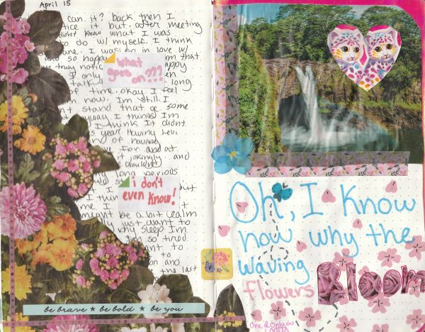

planners and journals
i have no clue how to structure this blog post... for a while i've wanted to talk about my history with planners, agendas, journals, digital ones, ETC. and my thoughts on them. there is a tangible timeline here for the most part, but i have used some things back and forth in between other methods. which makes it hard to structure this blog post in a yearly order. i will try my best nonetheless :)
premade planners
pic from sansborns.com.mx
i got gitfed a chococat planner back in 3rd grade and since then i have probably never been the same. i genuenly have no clue how can people go on with their lives without a single way of having track of the stuff they need to do... i really became an enjoyer of organizing my (elementary school ass) life because of this silly little chococat agenda.
it was SO cute!!!!  and since then i've always had a (some sort of) planner throughout my years.
and since then i've always had a (some sort of) planner throughout my years.
i've always used these planners for just school and like chores stuff. i didnt write a lot about my personal feelings til much later on. despite this, something i do regret is throwing away all these planners and agendas i've had during my childhood and teenage years! every year i would throw away the last planner i had so i could start fresh. and i never thought i would have loved to look back at them when i was older... at least i learned from this, and since 2020 i have not thrown away any planner or journal i've used. i find it very sweet to be able to see and be able to hold the proof of how much i've changed over the time.
to this point, i had only used those premade planners you find in stores. i was pretty cool with them until i found out about the world of bullet journaling (uh oh)
bullet journaling
in 2019 i tried my hand at bullet journaling as my main way of planning. as someone who liked to draw but not That much, i honestly really liked it! i could do anything i wanted and design it just how i wanted :D but with this came a few problems:
- making the pages was time consuming for me since i wanted them to always be extra pretty. you have heard this before, you know how it is
- i was spending more money on stationary. and listen. i LOVE stationary. but i was using bullet journaling as an excuse to get more and more things i didn't exactly need.
so... i was able to keep doing this for like a solid year? i think? but later on when i REALLY needed to save money, it eventually fell through due to the reason listed above.
notion mini horror story
when i gave up on the bullet journal, i turned into my good (evil) buddy (nemesis) notion.so. i genuinely really like notion just for storing stuff and using it as like a huge database of My Things. it works wonders for me like that.
PICTURE OF NOTION BULLET JOURNAL
but i have no clue what possesed me to use notion as some sort of journal AND planner. well actually i think it was the youtube videos of ppl showcasing their setups and whatnot. i still like to watch them tbh... but this was a horrible idea for my planner system. there is def way better stuff to be used as digital planners / journals. but i simply cannot use notion as one. notion has A LOT of things that bother me. i hate that the app is slow as hell, there's no offline mode, and it can look boring and lifeless to me. it also also just made me MISS the wonders of writing on a piece of paper.
art journal
from the massive fallout that was my bullet journal phase, i got introduced to art journaling. i surprisingly enjoyed it quite a lot! or at least just for that year. at the start of 2020 i had a notebook which i used throughout the entire year to just be as creative as i wanted to be while also being able to put my feelings into paper. i even managed to fill the entire notebook that same year!
i really liked the freedom of doing whatever, whenever i wanted. you know? i didn't feel bad when i just simply didn't have anything to draw or write about for days. when it comes to drawings / art, that shit just doesn't come to me as easy as it seems. but i was happy that at least with my art journal, i had the motivation to do small drawings and doodle on pages. i worked on this quite frequently over the year, and i am pretty sure i did decent drawings for a while here as well.
MORE PICTURES OF MY ART JOURNAL
after i filled my 2020 art journal, i bought another one for 2021.
PICTURES FROM 2021 - PRESENT ART JOURNAL
but sadly my motivation for these sort of things kinda of plummeted...... i still have it and i still use it to this day! i definitely treat it more of a scrapbook of sorts, though. i barely draw on it, i simply just glue things in there that would be lose somewhere on one of my desk drawers. but that is fine by me. i'm not gonna force myself to do something i don't want to.
B5 journal
i found myself wanting to write more. write more about how i was feeling, my thoughts, what i did throughout my day. i just wanted to write. i had tried doing this on notion, but that feeling of writing my feelings on paper is something so therapeutic sometimes. compared to just hitting keys on a keyboard. it just feels more personal. more lifely. and you can tell a lot about how i was feeling at the time of writing because of my handwriting. so i always thought that was something super neat about writing on journals.
during mid 2021, an ex-coworker of mine gifted me a massive notebook that i wanted (i believe the size is a B5), and since then i have been using this notebook to write about my life and feelings.
PICTURE OF THE JOURNAL ASIDE
i think for a long time i've used my B5 journal as a place to vent, instead of a place to keep a record of my days, which has made it very difficult to look back upon at times. but it does serve as a reminder that things can always change.
this method of journaling has really helped me. it lets me try to understand whatever nonsense my brain is having that day. i just find it very relaxing to grab a pencil and start writing about what i am thinking about.
nowadays
i think when it came to planners i kinda gave up  and since then i have been using a mix of these tools to organize my life:
and since then i have been using a mix of these tools to organize my life:
- google keep for lists and to-do's
- a wallet calendar so i can have a calendar at hand anytime!
- the calendar app on my phone because notifications are nice
- despite my lowkey hatred for notion, i do actually still use it for more... in depth? to-do's. for example:
this is how i've been operating for the past 2 years (notion calendar is farely recent but still) and honestly it does the job quite well.
talking about digital journaling: notion
i've also tried my notion.so account for writing logs and while yes it does the job pretty quick, it has absolutely NO CHARM at all. i wish notion was more customizable...  notion has a lot of pros when it comes to organizing your life digitally but the lack of customization or COLORS just really kills it for me
notion has a lot of pros when it comes to organizing your life digitally but the lack of customization or COLORS just really kills it for me
anyway, i actually started writing today's log because out of nowhere i suddenly felt really nostalgic or whatever about journaling and planning on paper. and writing this helped me noticed that balance that was missing from my logs in my B5 notebook. writing things out really helps wonders 
 so i thought, why not get myself a new journal notebook (as a treat) and start fresh? this time taking into consideration what i had learned. make space for the small, but happy moments. while searching for the perfect notebook i found this super cute one. and it was pretty cheap too so YAY for that! i also bought a really cute tulip pen the past week alongside some gel ink pen refills and i cant wait for it to arrive.
so i thought, why not get myself a new journal notebook (as a treat) and start fresh? this time taking into consideration what i had learned. make space for the small, but happy moments. while searching for the perfect notebook i found this super cute one. and it was pretty cheap too so YAY for that! i also bought a really cute tulip pen the past week alongside some gel ink pen refills and i cant wait for it to arrive.
written with love by des, 12.sep.23